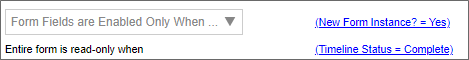
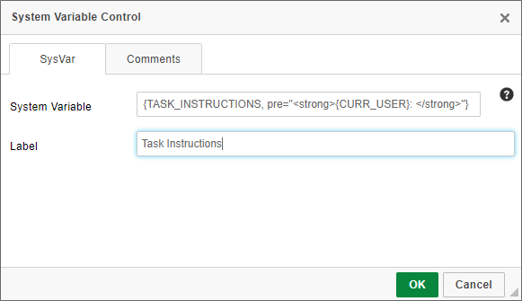
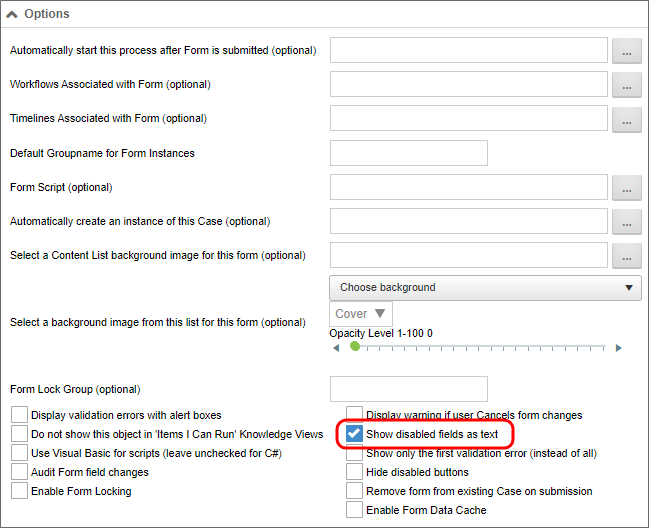

- Use meaningful instance names for each form definition, by setting the Form definition's Instantiated Form Name property. By the same token, use simple, meaningful names for object and field definitions. Do not use Hungarian notation or other programming-style conventions. Names should be logical and recognizable. This is very helpful when the objects are used in other places, such as when defining conditions. Object names will appear sorted alphabetically.
- Think carefully about when the Form's data fields should be editable by users. There are two properties on the Properties tab of the Form definition that control this: Form Fields are Enabled Only When and Entire Form is read-only when. In general, Form fields should be enabled for new form instances, but disabled in all other contexts. If form information does need to be edited, specify the field that should be edited during the process, and when editing is to be allowed, via visibility conditions on the appropriate fields. Section controls are extremely helpful here, because you can place the editable controls in their own Section, and enable or disable the Section control to enable/disable its constituent controls. Similarly, once the process is complete, the entire Form should be set to read-only, so that it cannot be edited after the process has completed.

- When using tables to provide Form layout, be sure to set the Role attribute, as described here.
- Instructions should tell users to do something. For example, “Please review this form and approve or reject it using the buttons below”. Note that it’s nice to begin instructions with “Please”. Descriptions should explain something. Always use friendly names for form fields that are required, have validation rules associated with them, or may be used in Knowledge Views, so that Knowledge Views and other derived uses of the field display human-friendly field names. Keep in mind that Knowledge View column titles will use the friendly name, so brevity is important, as a friendly name like "This is the name of the user who filled out this form" might not be the best choice.
- Always add the assigned user and task instructions at the top of forms and email templates. In a task context; the easiest way to be sure of that is to use the System Variable control, and set it to use the Task Instructions System Variable, which only appears in that context. You can append the task user's name to the control by typing "
{curr_user}:" in the "Pre" formatter of the variable's attributes, as shown below.
- As a guideline, on each Form template, there should be three standard fields: the form submitter, submission date, and a unique request number. The three fields should be disabled for all users. In some cases, the submitter may be submitting on behalf of another user: those fields should be separate, so that the submitter is always automatically set (usually by setting its default value to Form Submitter), and the on-behalf-of user can be selected by the submitter using a user picker or other mechanism. The unique request number can be set via the use of the Sequence Number System Variable. It's best to set this value in the very first activity of the Process Timeline, so the Sequence Number is generated only after the Form has been submitted.
- When possible, choose the Show disabled fields as text option in the Form definition, which will render disabled fields as plain text, rather than disabled controls.

- Form control appearance logic can be complicated. The following rules should apply:
- Think about when form control appearance logic should be implemented within a Business Rule, rather than rather than explicitly defined within the field properties. As a rule of thumb, consider a Business Rule when there are three or more conditions controlling the field's appearance, or when the same appearance logic is used on multiple fields. This is true of task assignment in general as well. If you put the assigned user in a Business Rule, you can more easily find and change the user later, as users often change in the course of regular promotions and attrition. Don’t name the Business Rule after the person, but rather, the role the person plays in that Process.
- Do not tie a specific user to the appearance logic for a field unless absolutely necessary.
- Avoid using the "Step Running" condition for appearance logic, because the fields you desire to show or hide will only be shown or hidden while that specific activity is running. In all probability, the actual condition you wish to use is "Step Reached", because you wish the fields to be available when the process reaches a specific point, and at all points in the process thereafter. It’s very common to have form control logic (enabled/disabled, visible/hidden, required/optional) driven by the state of the process, and the context in which the user is viewing that form (i.e., whether the user is in a task or not). As a general guideline, use “Activity Reached” when you want appearance based on whether or not the process has reached a certain point, and use “Task Name =” when you want appearance based on whether the user is interacting with the form in the context of a specific task assigned to that user.
- Appearance logic is strongly driven by inheritance. Inheritance is the ability of a container control to automatically incorporate, or inherit, properties of its parent container control. In the case of Form controls, for example, the "required" and "enabled" properties are inherited. The Form is the highest-level container control, and every control on the form is a child control of the Form. A Section control placed onto a Form will inherit the properties of the Form, while an individual control placed inside of a Section control will, in turn, inherit the section's properties.

For example, if the Required property of a Section control is set to "true", then inheritance ensures that all of the controls contained in that section will be required. You can override inheritance, however, by explicitly setting the Required property of a control inside the section to "False". If there is conflict between the Required property of a container control, and the controls contained inside it, the control property at the lowest level wins, and overrides the inheritance. With the "lowest level wins" model of inheritance in mind:
- Disable forms when the form isn't a new instance, then enable individual sections as necessary for data input in succeeding activities.
- Do not use the Otherwise disabled or Otherwise enabled conditional appearance settings in field properties unless you specifically want to override the appearance logic for the parent container in all cases.
- Setting a control to "Otherwise Xxxxx" when the parent container has its own appearance logic can result in unexpected behavior when the parent container's appearance logic conflicts with that of the control.
- Label control values don't get saved to the database; therefore, labels should be used only to show text on forms. Label controls are display vehicles only; don’t try to use them in conditions, for example. When possible, associate each label with an Input control for Accessibility compliance.
- Hide debug sections and other development conventions in forms from the non-developer form users. Users should never see anything on a form that isn't relevant to the process on which they are working.
- The Routing Slip should appear below any user action buttons so that users don't have to scroll below the Routing Slip to perform their assigned task.
- Use the branch/result order properties to ensure that options are presented consistently to users throughout a process. approvals are always displayed first in the button areas.
- Sequence numbers should always be formatted as text, and should always use the "digits" formatter. There are a couple of reasons for this.
- First, there's a general rule that, if you aren't going to do math on a data item, it's not actually a number, even if all of the characters are numeric. This is why zip codes, or social security numbers are always formatted as text. Additionally, if a data item is formatted as a number, then you can't use the "Contains" operator in the Condition Builder, and can only use the "=" operator. This limitation can be troublesome, because if you leave the value blank in, say, a Knowledge View filter condition that uses the "=" operator, Process Director returns no results, but leaving a "contains" condition blank returns all results. Most of the time, you want to return all results as a default, and then allow the user to filter the results to a smaller set by entering a value for the sequence number, which requires using the "contains" operator in the filter.
- Formatting the sequence number as text, of course, changes the way sorting works. A numeric field is sorted in numerical order, while a text field is sorted alphabetically, so the same set of sequence numbers will be sorted in different order, depending on whether they are text or numeric data.
NUMERIC SORTING ALPHABETIC SORTING 1 1 2 100 11 11 21 2 100 21
- This is where the "digits" formatter for the sequence number comes in. If you set the digits formatter to "digits=4", the sequence number will always be a fixed length of four digits, and will use leading zeros for smaller numbers, so that sequence number "1" will be stored as "0001". Adding the leading zeros will fix the Alphabetic sorting issue, so that you can sort by the sequence number in the expected order, e.g., 0001, 0002, 0011, 0021, 0100.